info BCA Math Team
The Bergen County Academies Math Team is one of the strongest math teams in the nation (check Past Results in the News page). The team participates in many math competitions during the year, both locally and across the globe.
The Math Team is open to all middle and high school students, regardless of mathematical ability. For students in high school (and some advanced middle schoolers), the Saturday Math Team meets every Saturday for three hours. These meetings will consist of a combination of lectures, actual competitions and practice competitions. Information on upcoming meetings can be found at the updates page, and resources and recordings of previous lectures can be found at the archive page.
This year our lectures will follow two different tracks:
The Introductory Track: A track geared towards
beginners who wish to do well on early-mid AMC 10 (even if
you
have taken the summer lecture series course in the topic, we
still recommend you take the introductory track).
The Intermediate Track: A track geared towards
veterans who wish to do well on late AMCs and early AIME.
You are allowed to switch tracks if the level is too easy or too difficult for you. You are also allowed to follow different tracks for different topics. Each week, the lectures seek to address a chosen topic at both an introductory and an intermediate level.
We are also responsible for organizing and running the Joe Holbrook Memorial Math Competition, the largest middle school math competition in Bergen County. For more information, please visit its official website at https://holbrook.bcamathteam.org.
group Math Team Leadership
| Michael Abramson (micabra@bergen.org) | Dr. Abramson has been working with the Math Team since 2005. As a student of contest writer Steven Conrad, he was a top-ten finisher on the USAMO, finished second at ARML, and attended the prestigious Math Olympiad Program (MOP) twice as a student and twice as a counselor. |
| Jonathan Pinyan (jonpin@bergen.org) | Mr. Pinyan is a 2003 alumnus of the Bergen County Academies, and has taught at the school since 2013. As a member of the BCA Math Team, Mr. Pinyan competed at ARML seven times, took the USAMO five times, and earned a perfect score on the AMC-12 in 2003. After receiving a bachelor's degree from Washington University and a teaching certification from Ramapo, Mr. Pinyan returned to BCA, where he now teaches Structures & Proofs, and Analysis II. He has taught at the BCA summer camp each year since 2008. |
| Ian Askins | Mr. Askins is an alumnus of the Bergen County Academies. He has taught at the summer math camp and worked with the math team since 2014. |
| Dan Plotnick | Mr. Plotnick is a former student of Mr. Holbrook at Freeport High School on Long Island. Dan competed in the early years of ARML and NYSML, attended MOP twice as well as the Hampshire College summer program, and studied mathematics at Harvard College. |
| Joe Holbrook | Joe Holbrook was the original coach of the AAST Math Team, and led it from the school's founding in 1992 until his 2010 death. He remains an inspiration to us all, and we strive to live up to his idea that Math Team is not just for the best, but that all students have something to gain from competition math, and all students are welcome at all math team events, whenever possible. |
|
Autumn Shin
(arrshi22@bergen.org) 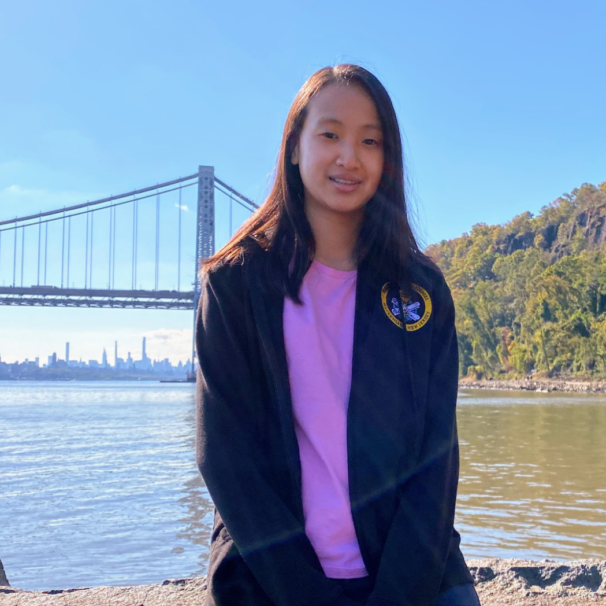 |
Hi! I'm a senior in AAST and I've been involved with the BCA Math Team since middle school. Despite not being very good at it, my favorite subject is probably combinatorics because of its clean strategies and cool applications. In my free time, I like listening to music, playing cards, singing, playing tennis, and reading. I'm excited for Math Team to run in person this year and to see lots of familiar and new faces!! |
|
Erez Israeli Miller
(ereisr22@bergen.org)
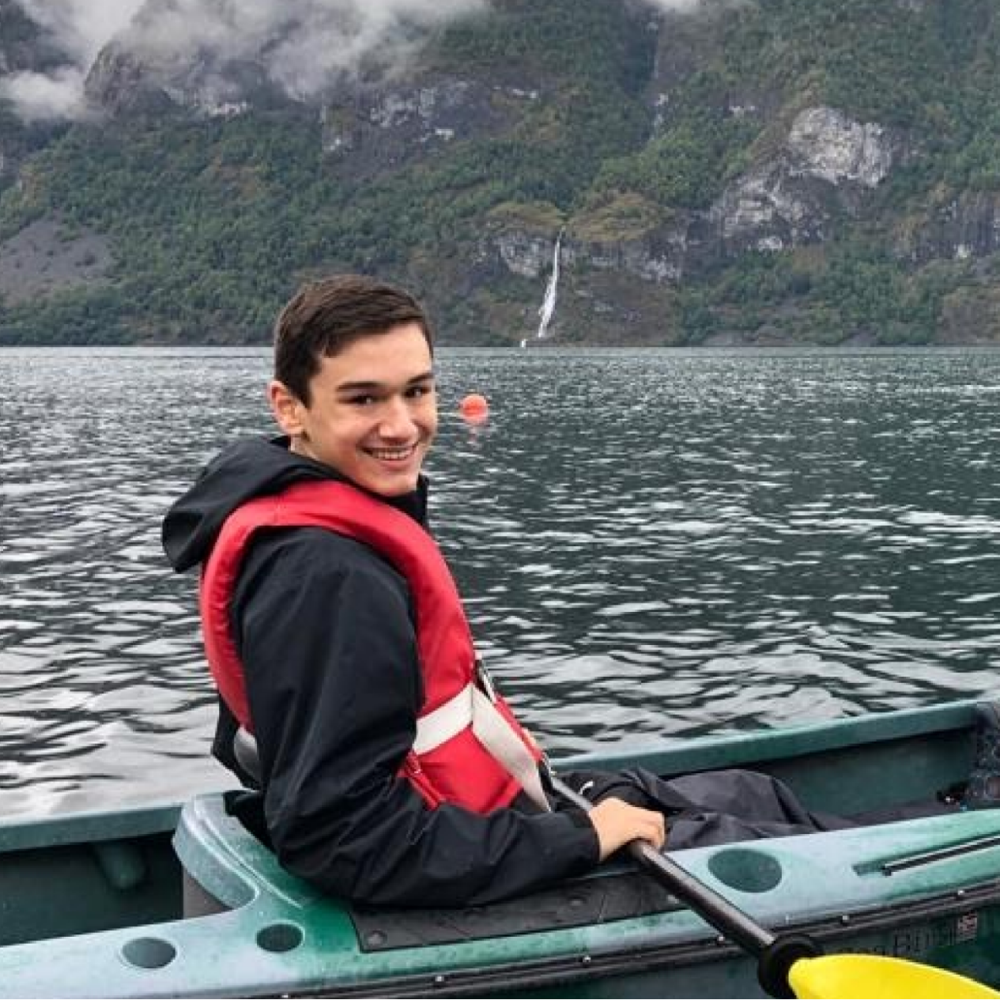 |
I’m a senior in AAST who joined Math Team on a whim in freshman year. I love physics, math, and computer science; in my eyes, the more abstract the better, so I love me some good, tasty algebra. Other than that, I love to make music, explore nature, and play automation games. My favorite part of Math Team is the amazing community, so I’m very excited to welcome you all back this year! |
|
Alicia Zhang
(alizha22@bergen.org) 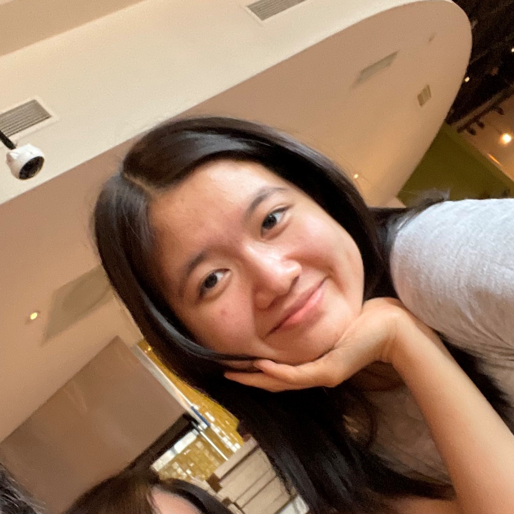 |
Hi everyone! I’m Alicia and I’m a senior in AAST. I’ve been a part of Math Team since middle school and have met so many great people here. It’s an amazing environment not only to learn interesting math, but also to meet and bond with friends. I can’t believe it’s my last year! My favorite topics mainly lie outside of competition math, but I think combinatorics is the coolest within competition math. Apart from math, I enjoy singing (not with Yul), listening to music, trying to make music, taking walks (sometimes with Yul), and eating food (with Yul). I really miss the Math Team community, so I’m very excited to meet and welcome you all in person!! |
|
Yul Kim (yulkim22@bergen.org) 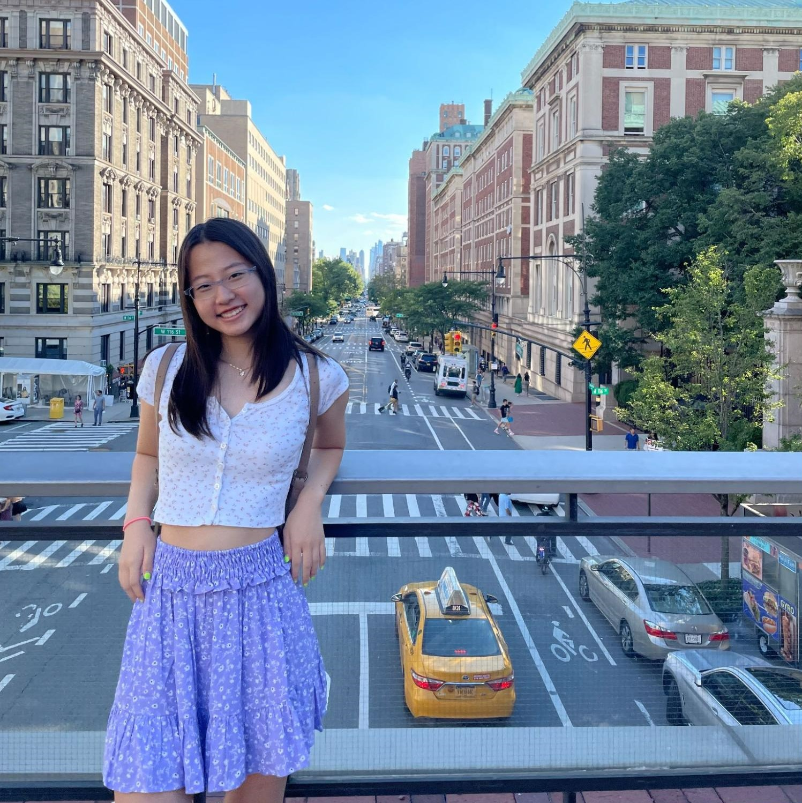 |
Hey! I’m Yul and I’m a senior in AAST. I’ve been a part of the BCA Math Team since middle school and I’ve loved my experience here. Not only did I learn a lot of cool math, I’ve made some of my best friends on the math team. My favorite subject is combinatorics because it’s the most fun to think about and I can see a lot of it being used in real life. Aside from doing math, I enjoy singing (not with Alicia), going to the gym, taking walks (sometimes with Alicia), and eating good food (with Alicia)! I’m excited for this year’s math team and hope to see you all in person! |
|
David Wang
(davwan22@bergen.org) 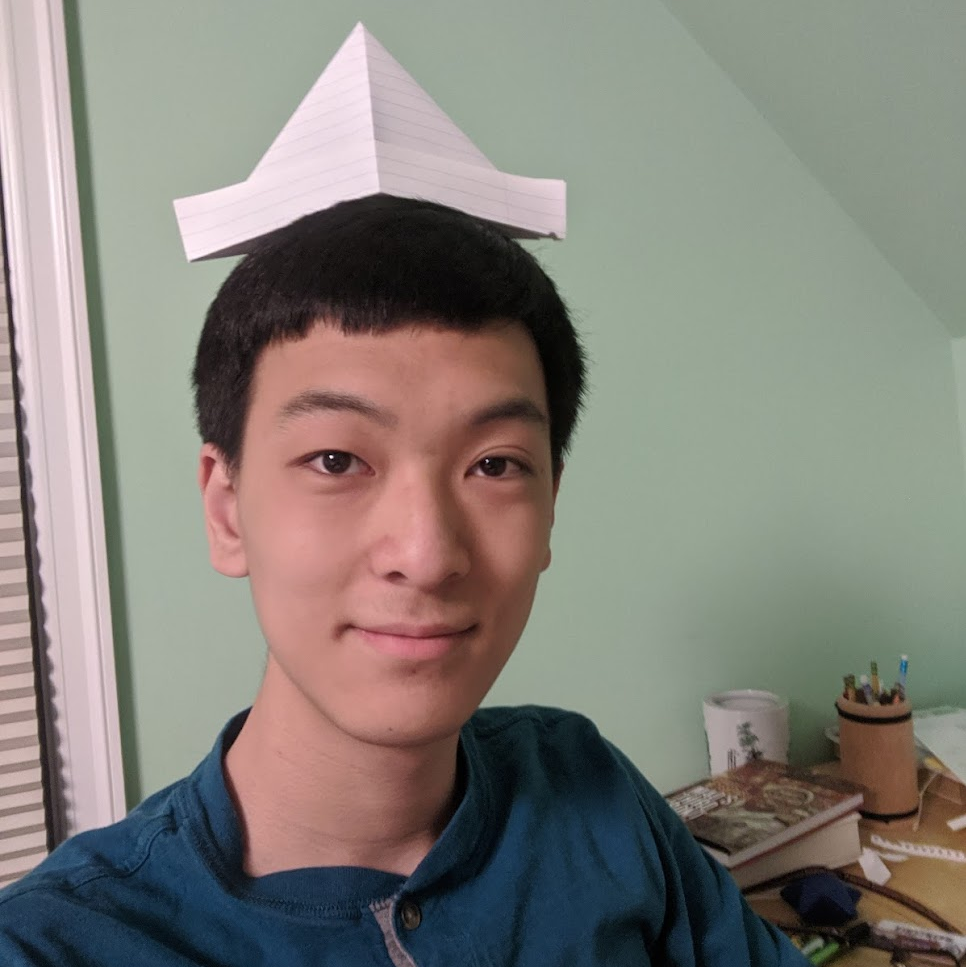 |
Hi all! I’m David, and I’m a senior at BCA. In 7th grade, I switched from attending Chinese school to attending BCA middle school math team, and have never looked back since. My favorite subject used to be geometry, but now I’m more ambivalent. Besides math and science, I also love history, and am part of the Model UN and debate teams at BCA. Outside of school, I also like reading, playing cards, and playing piano. Looking forward to seeing everyone! |
|
Michael Kasprzak (mickas22@bergen.org) | Hello! I’m Michael, a senior at BCA. I started doing math team in 7th grade and continued ever since. My favorite part of competition math is algebra, however, outside of that, my interests in math are almost anything. Besides math, my other academic interests are physics and coding. In my free time I also like to go on walks and bike. |
|
Omkar Pathak (omkpat22@bergen.org) |
Hi! I’m Omkar, a senior in AEDT. I’ve been a member of the math team for six years, starting with the middle school program in seventh grade. BCA Math Team introduced me to the world of math competitions and served as a nurturing community — I’ve met some of my closest friends at math team! My favorite subject is algebra, since that’s what I started with, but I’m also interested in number theory. Outside of academics, I enjoy playing (and obsessively watching) tennis, photography (especially in nature), and traveling. Feel free to reach out if you ever want to talk about any of these things! I’m stoked to meet everyone this year! |
|
Joy Ren (joyren23@bergen.org) 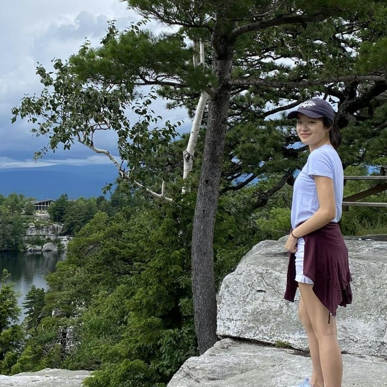 |
Hi! I’m a sophomore in AAST and I’ve been participating in math team since middle school. Math team has always been a special community for me where we can all gather together and learn about challenging and interesting topics. Besides math, I also love baking desserts, hiking, and crocheting. I’m excited to meet all of you in person this year and work on some fun problems together! |
|
Marvin Mao (marmao25@bergen.org) |
|
|
Justin Zhang (juszha23@bergen.org) 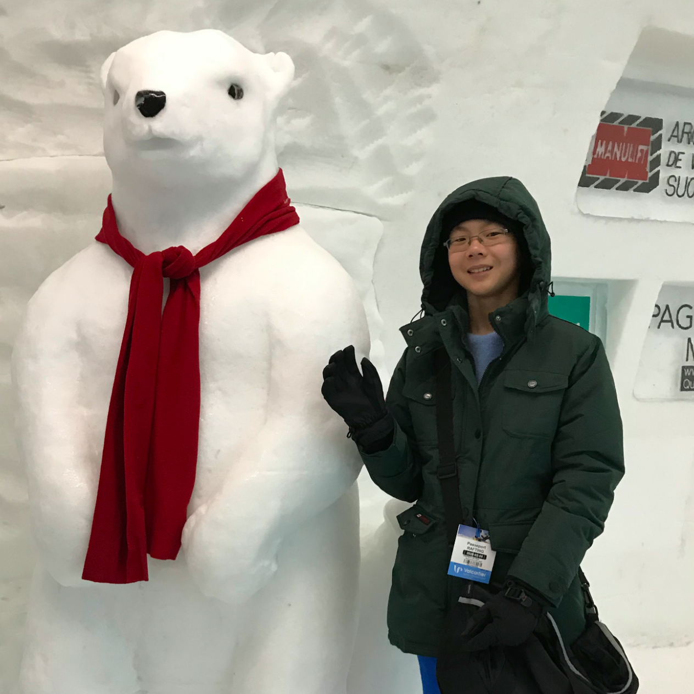 |
I am Justin, a sophomore in AAST. I joined the high school math team in 8th grade, and I enjoy working and thinking about math problems with others. I am excited for math team to return back in person, and look forward to meeting you there! |
|
Jaiden Shin
(jaishi23@bergen.org)
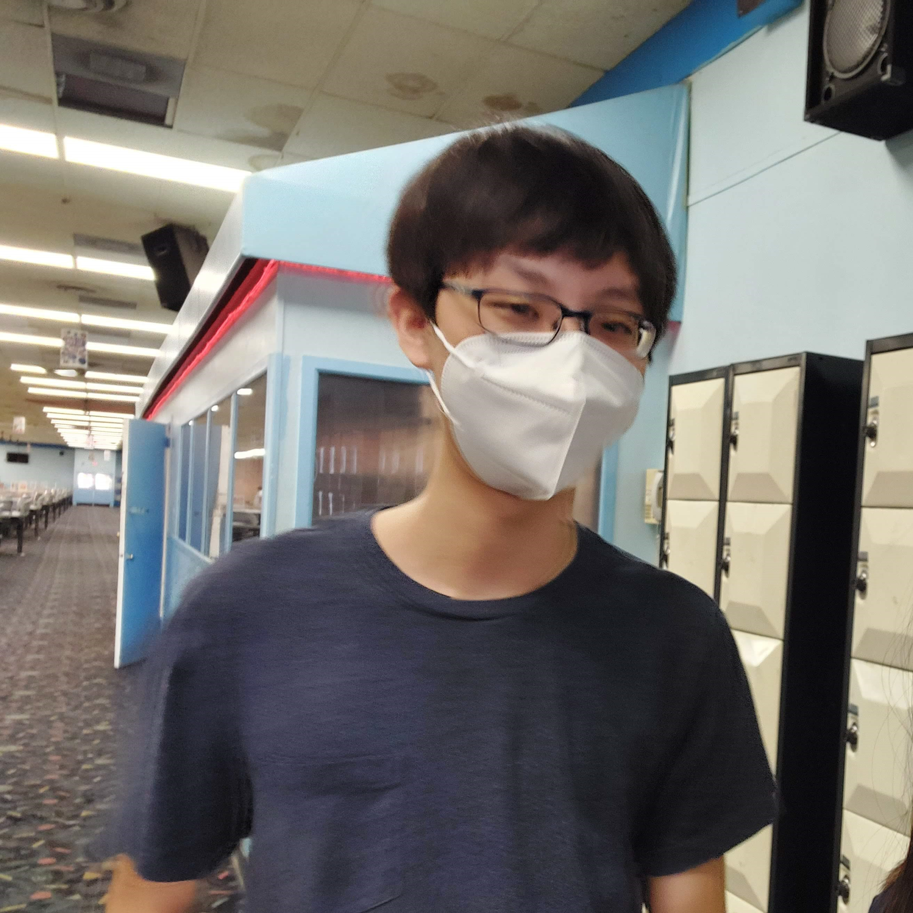 |
HI! I’m Jaiden, a junior in AAST and I’ve been a part of the math team since middle school. My favorite part of math is probably combinatorics; I find that it has the cleanest results and applications to other branches. Outside of math I enjoy learning (and failing) computer science, playing tennis, and visiting Nikhil’s potato farm on the 17th of each month. I look forward to seeing everyone in person when math team (if ever) goes back to normal! |
|
Nikhil Mudumbi
(nikmud23@bergen.org) 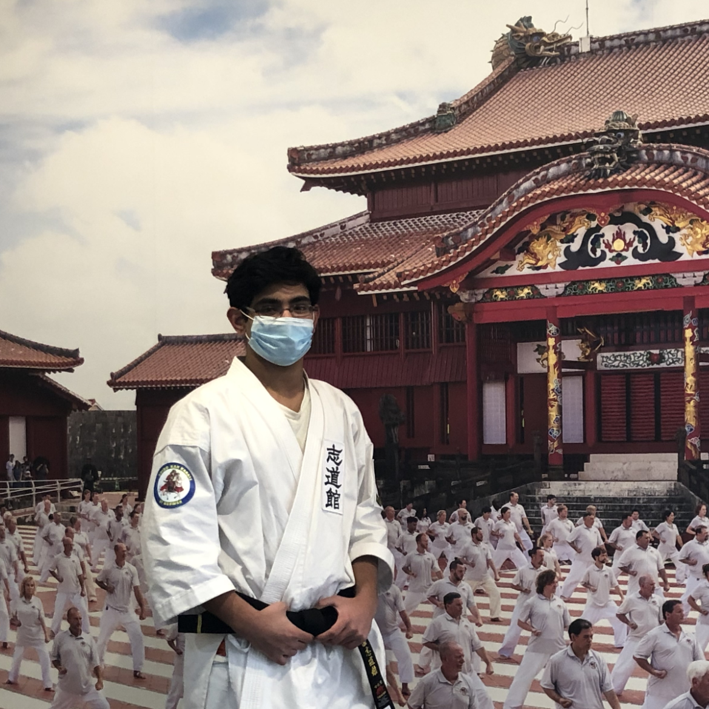 |
Hi! I’m Nikhil Mudumbi, a junior in AAST. I’ve been involved in Math Team since middle school, and I’ve been doing math competitions for even longer. My favorite part of math is definitely geometry; I find that it’s the part of math that allows me to be the most creative. Outside of math, I also love physics, computer science, and history. Non-academically, some of my hobbies include karate (I’ve been doing it for 12 years), tennis (though I’m not that good), reading, travelling, potato farming (but it’s really frustrating when Lance and Jaiden steal some of my potatoes from time to time). I can’t wait to meet all of you (hopefully in person at some point) and do some math! |
|
Eshaan Saxena
(eshsax23@bergen.org) |
Hi! I’m Eshaan Saxena, a junior in AAST. I started doing the middle school program in 7th grade, and joined the high school math team when I was a freshman. Through the BCA Math team, I’ve learned so much about math and competition math. My favorite subjects are algebra and geometry! Outside of Math Team, some hobbies of mine include biking, listening to music (The Weeknd is my favorite artist), and tennis! Feel free to reach out to me if you like any of these things! |
|
SangHoon Jung
(sanjun23@bergen.org) 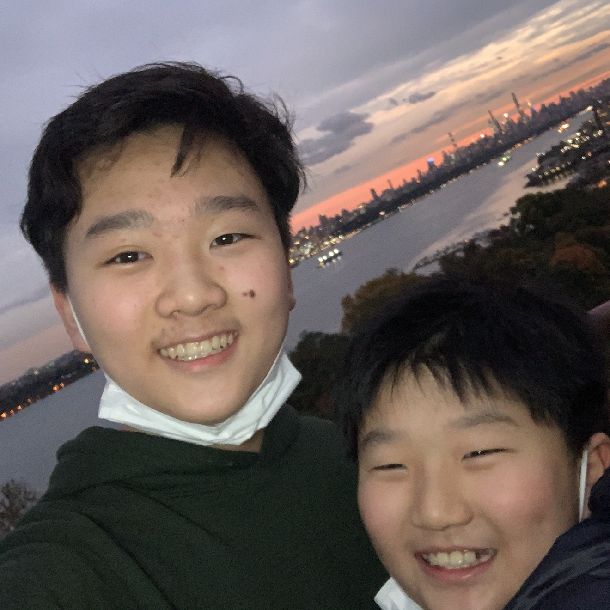 |
Hello! My name is SangHoon Jung and I am a junior in AMST. I’ve been a part of math team since middle school, and though I often confronted new topics every Saturday, I enjoyed learning from all the lecturers. Learning next to extremely talented and kind people made the experience all the better. Though geometry is my weakest subject, I enjoy solving those problems most because the solutions are very creative and satisfying. Outside of school I like to pursue music (I sing and play the percussion) and teach (I work at my local library to teach intro computer science). I look forward to meeting everyone in person! |
|
Lance Bae
(lanbae23@bergen.org) 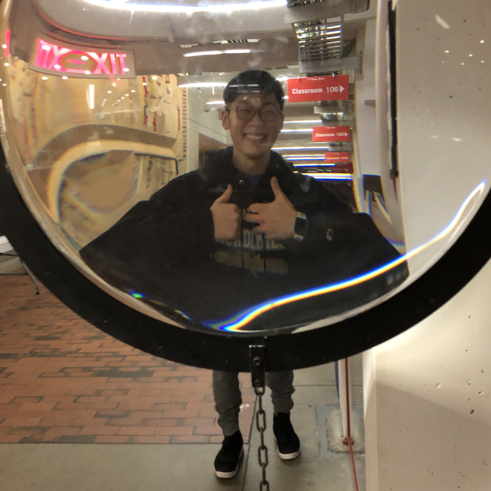 |
Hello hello, my name’s Lance and I’m a Junior in ATCS here at BCA. I’ve been a member of Math Team since Freshman Year, and it’s provided lots of great opportunities for me! Outside of math, I enjoy competitive programming (despite how incredibly frustrating it can be), rooting for the Yankees (also despite how incredibly frustrating it can be), working out, and visiting Nikhil’s potato farm. It’s really fun to see his “golden piggies” and steal 17 potatoes at a time. If you also enjoy any of the above activities, feel free to reach out! |
|
Krish Ramkumar
(kriram24@bergen.org) 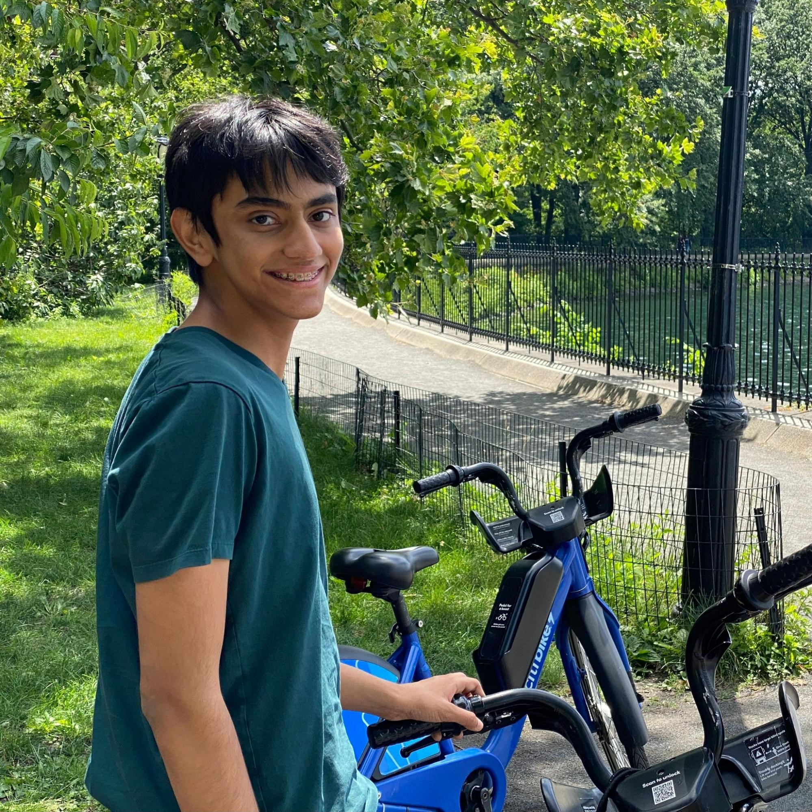 |
Hi! I'm a sophomore in ABF who joined the middle school math team in 7th grade and continued with the high school math team as a freshman. At first, it was very hard constantly feeling like the most inexperienced in the room, but the talented group of people with the BCA Math team make learning and practicing competitive math as fun and welcoming as possible. My favorite subject is geometry, as I enjoy how the concepts build upon each other. I love to swim, play guitar, and play video games (especially Stardew Valley and Portal 2!) I'm very excited to meet you all on campus this year! |
|
Luna Lee
(lunlee24@bergen.org) 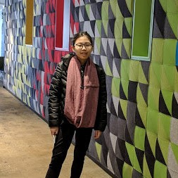 |
Hello! I am a sophomore in AEDT. I was part of my middle school math team for many years and naturally decided to join the one here at BCA. Having attended many of the BCA math team lectures as a freshman, I hope to help all of you learn as much as I did. Outside of math team, I enjoy reading and baking. I cannot wait to meet everyone in person and help grow the BCA math team community :) . |
|
Maia Walzer
(maiwal23@bergen.org) 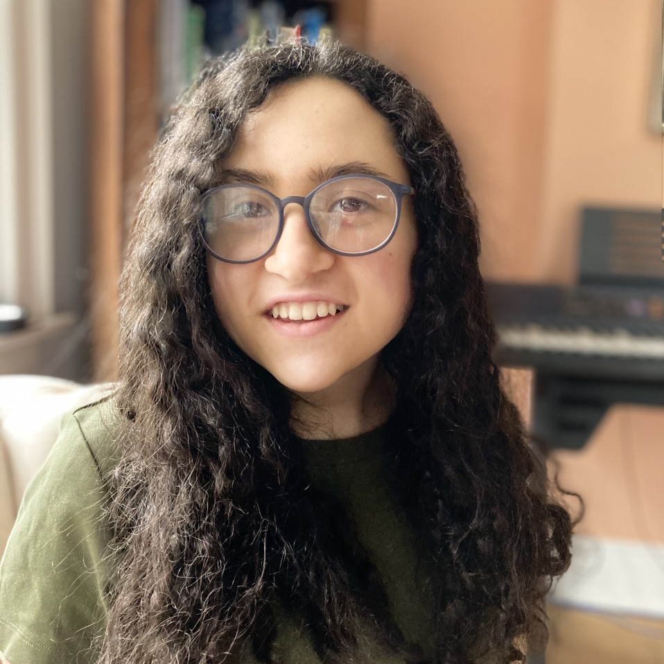 |
Hi! I’m a junior in AAST. I’ve participated in math team since middle school, and it’s exposed me to fascinating problems, exciting contests, and wonderful friends. My favorite subject is number theory; it’s fun, thought-provoking, and elegant. I also like hiking, reading, quiz bowl, bridge, and history. I really enjoy the collaborative aspect of math team, so I can’t wait to see everyone in person again! |
|
Renee Hong
(reneehong12@gmail.com) 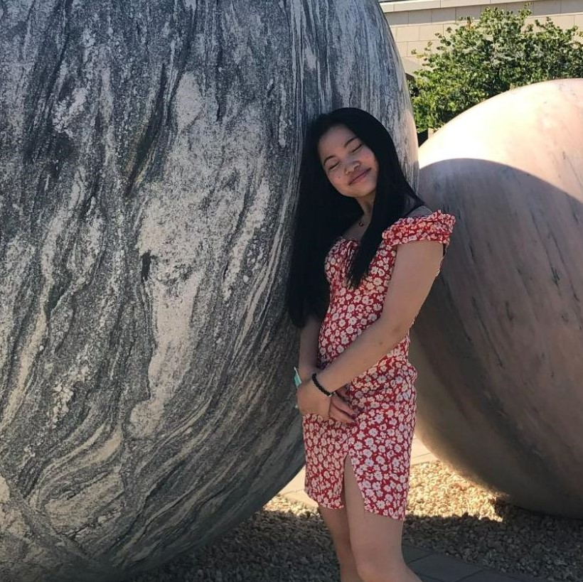 |
Hi!! I’m Renee, a junior at Livingston High School. I joined the math team in middle school, and it’s been so much fun! I always look forward to solving challenging problems and participating in competitions with my friends at BCA every weekend. My favorite subject is probably combinatorics just because the problems are always really fun to think about and solve. Other than doing math, I love reading, growing plants, eating sushi, and helping others. I’m so excited for math team this year, and I can’t wait to meet everyone in person!! |